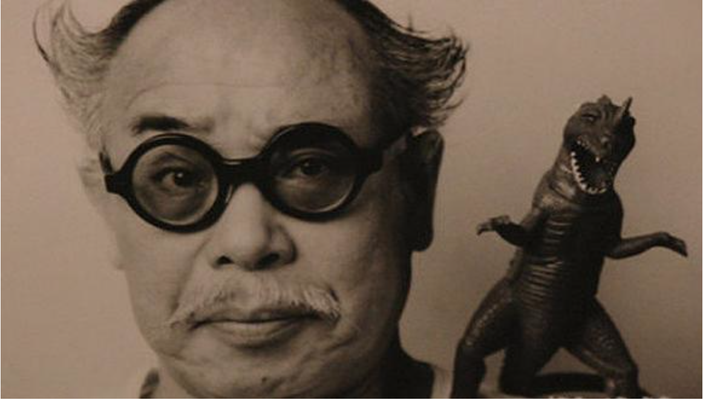
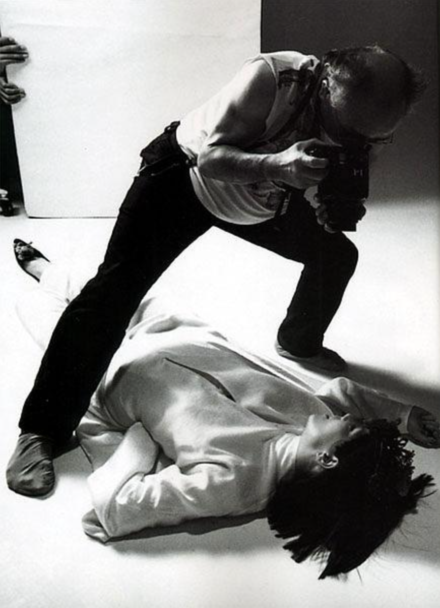
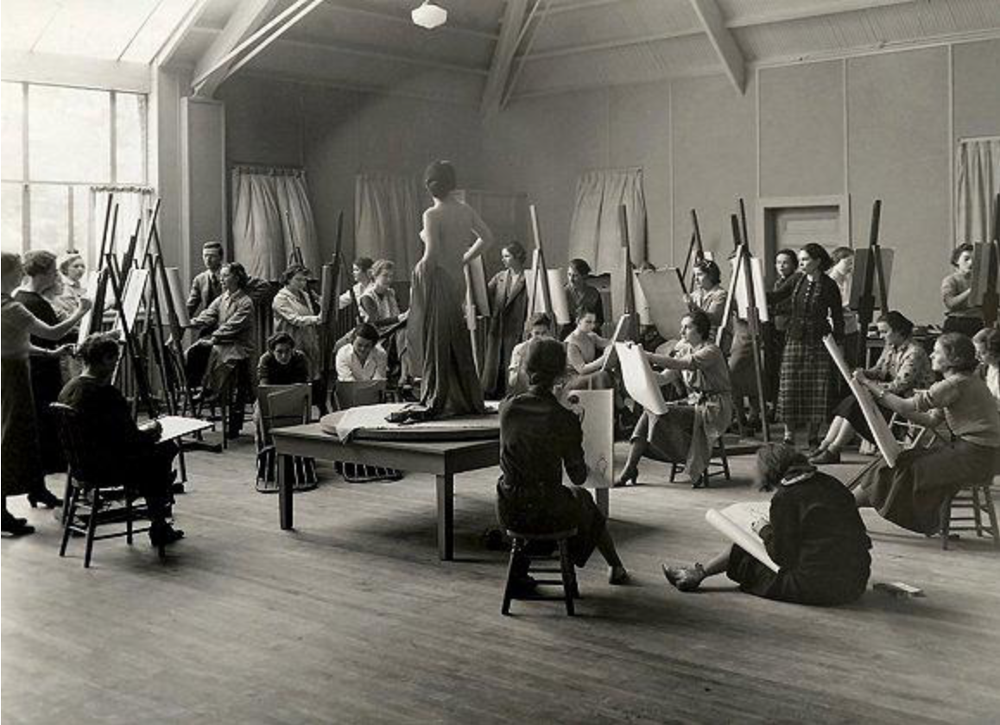

质问荒木经惟：以艺术为名义剥削 以缪斯为名义骚扰？
 fushia
2018-04-24 14:35:54
fushia
2018-04-24 14:35:54
以“私写真”为名，就可以正当化和合理化摄影中拍摄者对于被拍摄者的凝视和控制了吗？以“艺术”为名，就可以掩盖对于劳动力的剥削了吗？以“缪斯”为名，就可以美化艺术创作中潜藏的骚扰了吗？
原文发表于界面文化

日本摄影师荒木经惟
这个4月，日本“#MeToo运动”又有新进展。在这场席卷全球多个国家的反性骚扰运动中，曾为日本著名摄影师荒木经惟御用模特的KaoRi受到鼓舞，在博客上发布了《这种知识，真的正确吗？》一文。
“艺术是艺术，谈钱就俗了”：艺术市场中的隐形劳工
在KaoRi被荒木拍摄而分文未得时，有人告诉她，艺术家谈钱是一件羞耻的事情，只有超越金钱，艺术表达才会完美。“被这么一说，我也无话可说，我试图理解他口中的‘私写真’、‘写真的关系性’、‘LOVE’、‘缪斯’等等理念，也准备用贡献自己力量的态度去理解他。”
荒木经惟在拍摄
“缪斯”光环的背后：被浪漫化的男性中心主义
除了打着艺术的幌子对劳动力进行剥削以外，KaoRi在文中多次提到的“缪斯”问题也值得注意。实际上，“缪斯”作为一种艺术领域的象征存在已久。
艺术学院中的人体模特
尾声
至今，荒木方面尚未对KaoRi的文章做出任何公开回应，而荒木经惟的展览仍在继续。在美国纽约的性博物馆，荒木在美国的首个大型回顾展《未完成的荒木：荒木经惟作品中的性、生与死》正在进行。